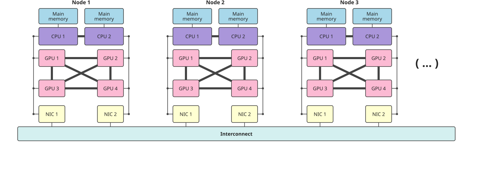

DiRAC GPU Performance Portability Workshop
University of Cambridge
DiRAC Training Team
Wednesday 16 September 2026
MPI_Send, MPI_RecvMPI_Bcast, MPI_Reduce, MPI_Alltoall#include <mpi.h>
#include <iostream>
int main(int argc, char* argv[])
{
MPI_Init(&argc, &argv);
int world_size;
MPI_Comm_size(MPI_COMM_WORLD, &world_size);
int world_rank;
MPI_Comm_rank(MPI_COMM_WORLD, &world_rank);
std::cout << "Hello from rank " << world_rank << " of "
<< world_size << std::endl;
MPI_Finalize();
}
For now assume one MPI process per GPU and assign in a round robin fashion:
int world_rank;
MPI_Comm_rank(MPI_COMM_WORLD, &world_rank);
MPI_Comm local_comm;
MPI_Comm_split_type(MPI_COMM_WORLD, MPI_COMM_TYPE_SHARED, world_rank,
MPI_INFO_NULL, &local_comm);
int local_rank = -1;
MPI_Comm_rank(local_comm, &local_rank);
MPI_Comm_free(&local_comm);
int num_devs = 0;
cudaGetDeviceCount(&num_devs);
cudaSetDevice(local_rank % num_devs);
https://tinyurl.com/dirac-multi-gpu
DiRAC GPU Performance Portability Workshop